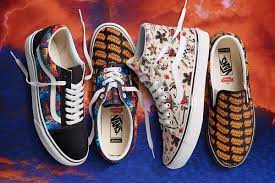

VANS
1966. Os irmãos Paul e Jim Van Doren, ao lado dos sócios Gordon Lee e Serge Delia, inauguraram o novo negócio no número 704 da East Broadway na cidade de Anaheim, na Califórnia, em 16 de Março. A Van Doren Rubber Company era uma empresa única e pioneira, por fabricar e vender tênis no mesmo lugar, direto ao público.
Naquela primeira manhã, 12 clientes compraram tênis da Vans, que foram fabricados durante a tarde e entregues na manhã seguinte.
O nome “House of Vans” é utilizado pela primeira vez, nas vitrines da loja de Anaheim.
Vans comtem varias peças, varias coleções
MOLETONS
CONJUNTOS
TENIS

Esses são apenas alguns modelos, no site se encontra muitas opções...